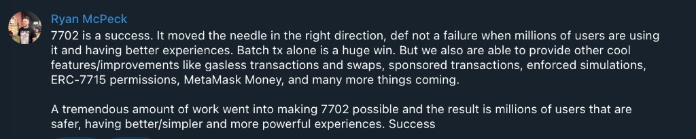

EIP-7702 Did Its Job. Portable Sessions Are Still Waiting
Session keys expose the gap between giving an EOA smart-account code and giving applications a portable way to use it.
A dapp wants to offer one session experience. The user grants a bounded permission once, the application executes within that scope later, and the user's choice of external wallet should not matter.
Today it does.
The problem is not that wallets failed to adopt 7702. The problem is that the accounts behind those wallets have not become one interoperable session platform for dapps.
Two definitions of success
Ask a wallet team whether EIP-7702 has succeeded and many can reasonably answer yes.
That answer is reasonable. EIP-7702 is final, shipped on Ethereum mainnet with Pectra, and allows an EOA to point to smart-account code without changing its address. Wallets can use it to add batching, sponsorship and more expressive authorization to accounts that already hold a user's assets and history.
Those capabilities are not incidental. The EIP names three target features directly:
- batching
- sponsorship
- privilege de-escalation through restricted sub-keys
From the wallet side, this is already useful. A wallet can upgrade its own users, choose and audit its delegate implementation, then ship features against an account model it controls.
From the dapp side, I use a stricter definition of success:
Can I connect an arbitrary external wallet and request the same bounded session capability through one reliable interface?
For session keys, the answer is still mostly no.
That does not cancel the progress already made. Session-key interoperability is not the only reasonable test of 7702, and it should not become a condition for acknowledging every other improvement. Batching alone removes a long-standing source of friction for a large number of users. Sponsorship and gasless flows add further value.
Wallets can reasonably call 7702 successful because it is improving transactions in production. My higher bar asks whether programmable EOAs have become one platform on which dapps can build sessions.
{kind=link}

What EIP-7702 actually standardizes
EIP-7702 standardizes a protocol mechanism. An EOA signs an authorization pointing to deployed code, and the protocol stores a delegation indicator at the EOA address. Calls to that address execute the delegated code in the EOA's context.
It does not standardize the account behind that pointer.
It does not define how that account represents a session, which permission policies it supports, how a dapp asks for one, or how the resulting authority is revoked and redeemed.
This boundary is deliberate. The EIP says applications must not expect to ask users to sign arbitrary 7702 authorizations. The delegated code has unrestricted access to the account, so wallets are expected to audit and control which implementations they allow. Applications that need custom functionality are directed toward standardized modules and permission systems above the delegated account.
That is a defensible security decision. A popup that lets any site replace the execution logic of an EOA would be a dangerous primitive.
It also means the usefulness of 7702 to dapps depends on the standards and wallet APIs built on top of it.
Different delegate contracts are not automatically a problem. Different delegate contracts without a common capability interface are.
Why MetaMask's boundary is reasonable
MetaMask does not let arbitrary dapps replace an EOA's execution logic with unknown code. EIP-7702 explicitly warns applications not to expect this because a malicious or flawed delegate receives extraordinary power over the account. A mass-market wallet should audit the implementation it authorizes and expose capabilities through a controlled permission flow.
MetaMask has also invested in the standards above that security boundary. MetaMask contributors were among the authors of EIP-5792, which gives dapps a wallet-independent surface for capability discovery and batched calls. Contributors from MetaMask also co-authored ERC-7715, for requesting execution permissions from wallets, and ERC-7710, for redeeming those permissions onchain. MetaMask then shipped an Advanced Permissions implementation based on those drafts.
That is close to a sensible sequence: enforce the security boundary, standardize the application-facing interface, then ship it.
Batching shows why this work matters. As wallets adopt 5792, a dapp can request several calls through one common API without knowing whether the wallet uses 7702, ERC-4337 or something else underneath. End users benefit from the wallet's smart-account implementation without the dapp coupling itself to that implementation. That is a substantial improvement over the approval-then-action flows EOAs previously imposed.
One wallet cannot create interoperability by itself. Standards become a platform only when enough independent implementations expose a useful common subset.
The alternative security boundary
At the protocol level, a 7702 authorization points to an implementation address. A wallet could technically let the application request that address or support a reviewed set of third-party implementations.
Embedded-wallet stacks demonstrate this model. Dynamic documents EIP-7702 support for embedded EOAs, and ZeroDev's flow lets an EOA delegate to Kernel. Biconomy's Nexus stack can use Smart Sessions, an ERC-7579 module with granular policies. These are account and session choices a dapp can make when it integrates an embedded signing environment that exposes those controls.
An embedded EOA can authorize EIP-7702 delegation while retaining its existing address. That is different from deploying a separate embedded or companion smart account, which creates another address and asset boundary. The problem I am examining is narrower: a user arrives with an external wallet, and the dapp cannot freely upgrade the EOA that wallet controls.
Mainstream external wallets generally do not expose raw authorization signing to connected sites. They authorize implementations they have selected and audited. This is a product and security decision, not a protocol limitation.
An embedded wallet operates inside an application's trust and key-management arrangement. A general-purpose wallet must assume that any connected site may be hostile. Letting that site nominate unknown delegated code would expose the EOA to a new security model behind a normal-looking approval.
Restricting delegates is reasonable, but the dapp cannot bring Kernel, Nexus or another preferred session stack to an arbitrary user's existing EOA. Interoperability then depends on the capabilities exposed by the wallet's delegate.
This is not an argument that wallets should simply add an unrestricted authorization prompt. ERC-7902 proposes a middle ground through an EIP-5792 capability named eip7702Auth. It lets a dapp request delegation to a particular implementation, but requires the wallet to maintain a strict shortlist of well-known, audited implementations it will accept.
The choice need not remain entirely wallet-owned, but it is not unrestricted dapp-selected delegation either. The draft does not define session semantics, require wallets to accept the same implementation, or guarantee a common implementation. It refines delegation without closing the session gap.
Why session keys are the useful test
A session key is a temporary key or account that receives limited authority from the user's main account. A well-scoped session might specify:
- which contracts it may call
- which function selectors it may use
- which tokens it may spend
- a maximum amount per transaction or time period
- an expiry time
- a chain or set of chains
- a revocation mechanism
The important property is not that the user signs less. It is that the user can grant less authority.
The comparison with Web2 sessions is useful. Session credentials are closer to scoped access tokens, often represented by JWTs in Web2. A session key can let a dapp act within onchain scopes without receiving the user's root wallet key.
For a trading application, that might mean permission to spend at most 50 USDC per day through one router for seven days. For a game, it might mean allowing a temporary key to submit low-value moves without interrupting the player for every action. For DeFi automation, it might mean reducing a position when health falls below a threshold, even when the user is offline.
This unlocks two qualitatively different experiences:
- Confirmation-free interactions while the user is online.
- Bounded execution while the user is offline.
Batching makes one interaction shorter. Sessions can remove whole classes of repeated interaction. That is why they are a stronger test of whether an account is genuinely programmable from a dapp's point of view.
They also create risks. A compromised session credential can be abused until its limits or expiry stop it. Loose scopes can authorize more than the user intended, and expiry handling, monitoring and dependable revocation become part of the security model. Sessions are useful because they reduce authority, not because they eliminate risk.
The interface a dapp wants
The ideal flow is not complicated:
- Discover which permission types the connected wallet supports.
- Request a specific permission for a session account.
- Receive an opaque authorization that can be redeemed through a standard interface.
- Execute within the granted scope without reopening the wallet.
- Let the user inspect and revoke the permission.
There are standards aimed at this exact flow.
| Standard | Common surface it provides | Boundary that remains |
|---|---|---|
| EIP-7702 | Protocol-level delegation from an existing EOA to smart-account code | It does not define session representation, policies, requests, redemption or revocation. |
| EIP-5792 | Wallet capability discovery, batched calls and call-status methods | It does not define session semantics or future bounded authority. |
| ERC-7715 | Discovery, request, inspection and revocation methods for execution permissions | Permission and rule types remain open-ended and require a common wallet-dapp intersection. |
| ERC-7710 | The onchain redeemDelegations interface for consuming permissions |
Permission contexts and delegation-manager implementations can remain manager-specific. |
ERC-7715 currently defines wallet RPC methods including wallet_getSupportedExecutionPermissions, wallet_requestExecutionPermissions, wallet_getGrantedExecutionPermissions and wallet_revokeExecutionPermission.
ERC-7710 defines the onchain redeemDelegations interface used to consume the returned permission.
If the major wallets implemented the same versions of these standards and supported the same permission types, their internal account implementations could remain different. The dapp would still need redemption and manager tooling, but it would not need a wallet-specific permission request flow.
That is not the current state.
Both ERC-7710 and ERC-7715 remain drafts. ERC-7715 deliberately leaves the set of permission and rule types open-ended. A type is usable only when the wallet and dapp both support it. The returned permission context is opaque. ERC-7710 permits different delegation managers with different internal implementations, and the structure of each permission context is manager-specific.
The envelope is moving toward standardization. The actual intersection of supported session policies is not there yet.
EIP-5792 does not fill the session gap
EIP-5792 is the success story worth comparing against.
It gives dapps a common call interface:
wallet_getCapabilitieswallet_sendCallswallet_getCallsStatuswallet_showCallsStatus
A dapp can request a batch without knowing whether the wallet uses 7702, ERC-4337 or another execution path underneath. This is the right abstraction boundary: ask the wallet for an outcome, not for its internal account machinery. Atomic execution is conditional, however. The dapp must check the wallet's reported atomic capability rather than assume every call bundle is atomic.
5792 does not depend on 7702, but together they provide an especially clear win for existing EOAs. EIP-7702 supplies programmable execution at the user's current address. EIP-5792 gives the dapp a common way to request a call bundle and, when the wallet reports atomic support, execute it atomically. A user can then approve a token and consume that approval in one transaction without the application learning which delegate contract the wallet chose.
The result is that batching can increasingly be treated as a wallet capability instead of an implementation-specific feature. Wallet-controlled delegate accounts are compatible with dapp interoperability when the ecosystem converges on the interface above them.
But 5792 does not define session semantics. Its example capability response contains sessionKeys, but the specification explicitly says those example capabilities are illustrative. Only the atomic capability is defined by 5792 itself. A wallet returning atomic batching support has not told the dapp that it can create, inspect or redeem a session.
wallet_sendCalls also authorizes a call bundle now. A session authorizes a bounded class of future calls. Those are different products and different security models.
Early 7702 guidance sometimes showed a permissions entry inside wallet_getCapabilities, or referred to an earlier wallet_grantPermissions method. The current ERC-7715 draft instead defines its own discovery and request methods. Drafts are supposed to evolve, but application teams notice when the interface is still moving.
How large is the fragmented wallet market?
There is no canonical wallet market-share number. Wallets cannot be reliably identified from ordinary EOA activity, and available datasets measure installations, users, connections, transactions or SDK customer bases. Any percentage without its denominator can mislead.
The scale of the integration surface is clear, however. WalletConnect reported more than 700 wallet integrations during 2025. A dapp will not support hundreds of bespoke session implementations.
The most directly relevant public estimate I found comes from Dune's Wallet Report, using connection data from apps on Dynamic in May 2025:
| Wallet or category | Approximate share of all EVM connections |
|---|---|
| MetaMask | 50% |
| OKX Wallet | 18% |
| Rabby | 7% |
| Other external wallets | 7% |
| Dynamic embedded wallets | 18% |
- MetaMask50%
- OKX Wallet18%
- Rabby7%
- Other external7%
- Dynamic embedded18%
- MetaMask61%
- OKX Wallet22%
- Rabby8.5%
- Other external8.5%
After setting aside the embedded-wallet category, the rounded figures suggest roughly three-fifths MetaMask and two-fifths other external wallets in this dataset. That is an order-of-magnitude estimate, not a precise normalization or a global market-share table. Dynamic's customer mix may differ from the wider dapp ecosystem.
Other datasets produce different rankings. WalletConnect's February 2025 ranking placed Trust Wallet first and MetaMask second by monthly connections, but did not publish percentages. Phantom reports a large multichain user base, yet its EVM connection share is not separately reported. Ambire and Uniswap Wallet also lack standalone shares in these snapshots. Missing measurement should not be read as zero usage, and each dapp's wallet mix will differ by chain, geography and audience.
All figures above are estimates or provider-specific samples. They are included to show the order of magnitude and fragmentation, not to claim a definitive global wallet census.
What external wallets expose today
As of 17 August 2026, the public dapp surface remains uneven. This is an evidence snapshot, not an inventory of every feature inside each wallet.
| Wallet | Public dapp capability surface I could verify | Public dapp-facing permission surface I could verify |
|---|---|---|
| MetaMask | EIP-5792 plus Advanced Permissions | ERC-7715 discovery, requests and inspection, plus ERC-7710 redemption. I found no public revocation action in the current wallet-client reference. |
| Ambire | EIP-5792 batching methods at the cited revision | At pinned commit 56b5335, I found no ERC-7715 execution-permission methods in the provider allowlist. This does not establish the current product's full surface. |
| OKX | Documented EIP-5792 call APIs | I found no documented public ERC-7715 session interface. Its provider documentation also limits capability use within wallet_sendCalls. |
| Uniswap Wallet | EIP-5792 batching and optional paymaster support | Calibur documents alternative keys and policy hooks, but I found no documented public ERC-7715 session interface exposed to dapps. |
| Trust Wallet | Wallet-controlled EIP-7702 features such as FlexGas | I found no documented public ERC-7715 session interface. Trust's FlexGas material describes delegation through Trust infrastructure. |
| Rabby | Standard provider methods; no session API verified | I found no documented public ERC-7715 session interface. Issue #3102 is a user-filed request for a dapp-facing authorization method, not proof of all capabilities. |
| Phantom | EIP-1193 provider for supported EVM chains | I found no documented public EIP-7702 or ERC-7715 session interface in the EVM provider documentation I reviewed. |
Sources: MetaMask Advanced Permissions, MetaMask wallet-client actions, Ambire provider methods at the cited revision, OKX Provider API, Uniswap wallet capabilities at the cited revision, Calibur hooks, Trust Wallet FlexGas, Rabby issue #3102, Phantom EVM provider.
“Not verified” here does not mean the wallet has no internal session functionality. It means I could not verify a documented, portable interface that an arbitrary connected dapp can rely on. MetaMask and Uniswap Wallet demonstrate the distinction in different forms: both have sophisticated account capabilities, while only MetaMask documents the ERC-7715 request surface in this comparison.
MetaMask is therefore the clearest example of the desired path, not the cause of the remaining gap. Its session path has not yet become the ecosystem minimum in the way EIP-5792 batching is beginning to.
Why dapps do not simply integrate every model
A dapp can progressively enhance for wallets that support ERC-7715. It should feature-detect rather than check the wallet's brand:
ts
That is useful future-proofing. If another wallet implements the standard tomorrow, the integration can start working without a brand-specific branch. Sessions can also be offered as progressive enhancement when they are genuinely optional. Users with supporting wallets get the improved flow while everyone else keeps a complete baseline experience.
That approach does not produce a consistent product when sessions are central to the application.
The real support matrix is not just wallet A versus wallet B. It is:
wallet × version × chain × delegated account × permission type × rule type
If sessions are central to the application, offering them only to one wallet can create two materially different product experiences. One group gets confirmation-free or offline execution. Everyone else gets repeated popups, an embedded-wallet prompt, or no feature at all.
Integrating each wallet-specific account model is worse. The dapp now owns multiple permission encodings, execution paths, revocation models, simulations, relayer requirements and failure modes. Each path handles user funds.
Narrower tools can cover some use cases without general session keys. Signed orders can authorize a particular trade, permits can authorize bounded token spending, and intent systems can let solvers fulfil a constrained outcome. These are often preferable when the product only needs one narrow action. They do not provide a portable, general-purpose session over an arbitrary external EOA.
The result is a coordination problem. Wallet teams can continue to innovate inside their own accounts, but dapp investment does not compound across the ecosystem. Product teams optimizing for maximum wallet coverage usually build against the common denominator. For sessions, that is still a normal externally initiated transaction.
Why the separate smart account keeps returning
An embedded EOA can use EIP-7702 without changing its address when the application integrates an embedded signing environment that exposes those controls. That is not the fallback available for a user who arrives with an external wallet that will not authorize the dapp's preferred implementation. In that case, an application-controlled smart account gives the dapp one implementation and one session model for every user:
- permission types and spending rules
- sponsorship and revocation policy
- relayer, bundler and error-handling paths
The cost is a separate account boundary. Funds, approvals and identity may remain on the external EOA while the programmable account lives at another address. The application may need deployment, bundler and paymaster infrastructure, monitoring and recovery paths. It may also have to route assets and explain the second address to the user.
Dapps still choose this path because the costs buy deterministic behavior. For dapps that need sessions across external-wallet users, much of the practical innovation still revolves around deploying an application-controlled account and making that extra account boundary as unobtrusive as possible. That is useful engineering, but it is different from requesting a portable session over the EOA the user already brought.
Companion-account flows can reduce friction by moving assets into a user-owned smart account, executing calls there, and returning the results to the EOA. The companion still has deployment and routing costs, and it needs fresh authority before it can access returned assets again.
For persistent automation, the application therefore needs one of three things:
- A standardized permission over the external EOA.
- Funds or durable allowances left accessible to a companion account.
- A separate smart account that remains the application's execution account.
The first is the portable EIP-7702-enabled experience. The other two are fallbacks the application can control itself.
The higher bar for sessions
EIP-7702 let wallets attach programmable execution to existing EOAs while preserving the user's address. Batching through EIP-5792 shows that dapps benefit when wallets converge on an outcome-level interface.
That is real progress, not a consolation prize. MetaMask's approach also shows that the architecture can support a standardized permission surface while keeping the delegate boundary controlled. The incomplete part is network-wide application interoperability.
For sessions to become a dependable external-wallet feature, the ecosystem still needs:
- Broad implementation of ERC-7715 discovery, request, inspection and revocation methods.
- Convergence on useful permission types and rules, not only the RPC envelope.
- Consistent ERC-7710 redemption behavior and tooling across delegation managers.
- Clear per-chain capability reporting and safe wallet UX for reviewing and revoking sessions.
- Enough coverage that sessions can be a core product capability rather than a wallet-specific enhancement.
Wallets do not need to delegate every user to the same contract. They do need compatible semantics if dapps are expected to treat their accounts as one platform.
EIP-7702 made EOAs programmable for wallets. It has not yet made session capabilities portable for dapps. A dapp still cannot rely on one cross-wallet way to request, scope, redeem and revoke a session over the address a user already controls.
So yes, EIP-7702 can fairly be called a success. Batching moved the EOA experience forward, and the unfinished session layer does not erase that achievement. My own application-layer bar is higher. I use “session keys are the JWTs of Web3” as shorthand for bounded credentials that let applications act without holding a user's root authority.
Session keys may also be a proxy for a broader class of smart-account capabilities. The next useful feature may emerge before its interface and security model are mature enough to standardize. Wallets will reasonably experiment within accounts they control, constrain implementations while they are audited, and arrive at different early designs. From the dapp side, however, that capability becomes broadly useful only when enough wallets converge on a consistent way to discover, request and use it.
That may be the recurring challenge of programmable EOAs. EIP-7702 creates room for wallet innovation immediately, but each new capability must still cross a separate interoperability threshold before dapps can treat it as part of the platform. Programmability creates possibilities. Audited, interoperable interfaces turn those possibilities into dapp capabilities.